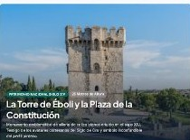
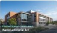
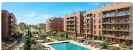
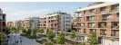
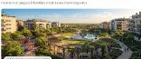
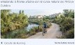
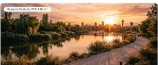
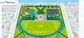
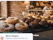
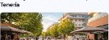

Pinto y La Tenería: Guía Territorial y Comunitaria
Descubre el posicionamiento territorial y cartográfico de la península Ibérica, la vida de los barrios Tenería y el entorno escolar en el IES Calderón de la Barca.
España
Centro geográfico e histórico peninsular.
Torre de Éboli
Fortaleza del siglo XIV y centro eclesiástico.
Entorno Residencial
Bulevares verdes, parques y vida familiar.
Centro Bilingüe
Referente formativo con ESO, Bachillerato y FP.
El Municipio: Pinto y su Km 0 Simbólico

La Torre de Éboli y el Centro de la Península
La legendaria fortaleza medieval de Pinto albergó a Doña Ana de Mendoza, la célebre Princesa de Éboli, recluida por orden del rey Felipe II en 1579. Este enclave no es solo un hito monumental, sino según la tradición histórica y cartolaria, marca el centro exacto de la península Ibérica, hoy simbolizado en la emblemática Plaza de la Constitución.
Villa del Chocolate
Pinto cuenta con más de un siglo y medio de aroma a cacao gracias a marcas históricas como La Colonial y Chocolates Eureka. Esta tradición sigue viva en la fiesta anual del chocolate y en los confiteros artesanos de los dulces "Ombligos".
Hitos Urbanos de Pinto
-
1
Ermita de San Antón
Templo barroco devocional y sede de tradiciones populares.
-
2
Iglesia Santo Domingo de Silos
Templo renacentista de tres naves con retablo manierista mayor.
-
3
Estación de Cercanías C-3
Histórica línea inaugurada en 1851, a 25 min de Madrid-Atocha.
El Barrio: La Tenería I y II
Movilidad y Bulevares
Ejes vertebradores como la Calle Juan Pablo II y Manuel de Falla ofrecen aceras de más de 4 metros, carriles bici segregados y pacificación de tráfico rodado.
Parque Gabriel Celaya
El pulmón central de La Tenería, con áreas infantiles homologadas, praderas verdes con drenaje sostenible y áreas de calistenia al aire libre.
Comercio de Proximidad
Obradores de masa madre, fruterías, farmacias, clínicas dentales y animadas terrazas en los bajos abiertos que fortalecen la vida vecinal.
La Tenería I (Consolidada)
Diseñada en la década de los 2000, con manzanas residenciales cerradas, piscinas interiores, zonas comunes ajardinadas y el Centro de Salud La Tenería.
La Tenería II (Expansión)
Área contemporánea que acoge a familias jóvenes, el IES Calderón de la Barca, proyectos de vivienda de alta eficiencia energética A y grandes paseos.
IES Calderón de la Barca

Instituto de Educación Secundaria Bilingüe
Polo educativo vertebrador del barrio de La Tenería. Centro público comprometido con el rigor académico, el bilingüismo en inglés, la innovación digital y la convivencia escolar.
ESO y Bachillerato
Programa Bilingüe de la CAM, refuerzo instrumental en matemáticas y preparación EvAU.
FP Informática & TIC
Grado Medio en SMR y Grados Superiores en DAM y DAW con convenios FCT líderes.
Biblioteca Digital
Más de 12.000 volúmenes de consulta y literatura juvenil integrada en eBiblio.
Huerto Escolar & STEAM
Parcela pedagógica gestionada colaborativamente, robótica con Arduino e impresoras 3D.
Directorio y Teléfonos de Utilidad Pública
Servicios comunitarios de referencia inmediata para vecinos y comunidad educativa.
España: Marco Geográfico, Histórico y Peninsular
La perspectiva macro: situación en el suroeste de Europa, encrucijada cultural y organización territorial que acoge a la Comunidad de Madrid y la Comarca Sur.
4º país más extenso del continente europeo
Alta concentración en el eje central
Estructura autonómica constitucional (1978)
Inviernos rigurosos y estíos cálidos
El Centro Geográfico Peninsular: De Madrid a Pinto
Históricamente, la determinación del centroide de la Península Ibérica ha sido objeto de investigaciones topográficas, tradiciones populares y cálculos astronómicos. Durante la dominación andalusí y posteriormente en el siglo XIV, diversas crónicas situaron en el entorno de la villa de Pinto el vórtice o punto medio peninsular.
Pinto (Punto Céntrico)
Localización ancestral simbolizada por el monolito conmemorativo en el corazón urbano.
Kilómetro 0 Radial
La Puerta del Sol fija el origen de las seis carreteras nacionales radiales.
Estructura Territorial y Administrativa
Desglose piramidal de las competencias y escalas de gobierno que regulan el marco vital de la ciudadanía:
Administración General del Estado
Leyes orgánicas, red nacional viario, seguridad, soberanía y marco fiscal común.
Comunidad de Madrid (Autonomía Uniprovincial)
Educación (colegios e institutos IES), sanidad, ordenación comarcal y transporte regional.
Ayuntamiento & Comarca Sur
Gestión municipal de Pinto: urbanismo vecinal, parques, servicios de proximidad y barrios residenciales.
Patrimonio, Diversidad y Redes de Comunicación
La disposición radial articulada a lo largo de los siglos XVIII y XX consolidó la Meseta Central como el nodo de articulación hacia Andalucía, Levante, Extremadura y el norte peninsular.
Autovía del Sur (Eje Radial)
Arteria fundamental que enlaza Madrid con Andalucía a través del corredor de Pinto, Valdemoro y Aranjuez.
Cercanías Renfe
La histórica vía inaugurada en 1851 conecta a los estudiantes y trabajadores de Pinto con Atocha y Sol en menos de 25 min.
Plataformas Logísticas Sur
Interconexión viaria estratégica y proximidad a corredores de alta velocidad AVE, convirtiendo el sur en un hub peninsular.
Visualización Geográfica: De la Península al Entorno Urbano
Posicionamiento en la Submeseta Sur, Cuenca del Tajo y altitud 604 msnm.
Descender al Nivel Municipal
Explora la historia viva, la emblemática Torre de Éboli, el origen del Km 0 y la vida comunitaria.
Pinto: Municipio Histórico y Km 0 Simbólico
Villa centenaria del sur metropolitano de Madrid, famosa por su Torre de Éboli, su tradición chocolatera y su condición de encrucijada peninsular.
La Torre de Éboli y la Plaza de la Constitución
Monumento emblemático de sillería caliza blanca erigido en el siglo XIV. Símbolo inconfundible del perfil pinteño.
La Prisión de Doña Ana de Mendoza
En la noche del 28 de julio de 1579, por mandato expreso del rey Felipe II tras el asesinato de Juan de Escobedo, la influyente y carismática Princesa de Éboli fue arrestada en Madrid y conducida bajo custodia a esta torre del homenaje, donde permaneció confinada durante seis meses en sus aposentos superiores. Su arquitectura defensiva conservó matacanes almenados, bóvedas de crucería y un recio carácter que domina el centro histórico vecinal.
El Monolito del Centro Peninsular
Situado en la contigua Plaza de la Constitución, el hito escultórico conmemora la arraigada leyenda popular y las tradiciones históricas que sitúan en Pinto el auténtico centro geográfico y simbólico de la Península Ibérica.
Tradición Dulce: Villa del Chocolate
Más de siglo y medio de aroma tostado a cacao define la memoria sensorial y laboral de Pinto, cuna de los obradores chocolateros de Madrid.
La Colonial y Eureka
Hacia mediados del siglo XIX, la llegada del ferrocarril favoreció el asentamiento de industrias reposteras insignes como La Colonial (1854) y posteriormente Chocolates Eureka. La villa abastecía de tabletas de chocolate fino y cacao soluble a los cafés de la Puerta del Sol.
'Los Ombligos de Pinto'
Creación artesanal registrada que rinde tributo directo a la condición de Pinto como centro geográfico peninsular. Se elaboran a partir de una delicada masa sablé con forma circular característica.
Feria del Chocolate · Mes de Febrero
Jornadas de catas a ciegas, talleres infantiles y chocolatada monumental en la calle Real.
Hitos Urbanos y Patrimonio Monumental
Ermita de San Antón
Nodo devocional levantado en ladrillo y aparejo toledano. Núcleo de las tradicionales bendiciones de animales en enero.
Santo Domingo de Silos
Templo parroquial mayor erigido en los siglos XVI y XVII. Nave central con coro alto renacentista y gran retablo mayor manierista.
Parque Juan Carlos I
Espacio de 55 hectáreas con lago artificial navegable, circuitos deportivos y el parque temático Arqueopinto.
Distribución del Casco Histórico y Conexiones Urbanas
Conexión y Transporte Territorial
Estación céntrica con enlace directo a Madrid-Atocha (20 min) y Sol (25 min). Frecuencia cada 10-15 min en hora punta.
Salidas inmediatas a la Autovía del Sur (A-4) y transversal a la M-506 hacia Fuenlabrada, Getafe y Móstoles.
Líneas 421 (Legazpi), 428 (Getafe), 455, 471 y servicio nocturno búho N401.
Continuar a: Barrio La Tenería I y II
Explora el ensanche residencial contemporáneo de Pinto, sus bulevares verdes y el IES Calderón de la Barca.
El Barrio: La Tenería I y II
Urbanismo contemporáneo, bulevares arbolados, espacios residenciales y vida comunitaria en el norte de Pinto. El modelo de crecimiento estilístico que une naturaleza, salud y educación de vanguardia.
Crecimiento planeado
Perfil joven e intergeneracional
Concepción abierta y verde
Muy superior a la media de la CAM
Dos Fases, un Mismo Compromiso Comunitario
La Tenería representa la vanguardia del urbanismo pinteño: una articulación armónica entre la primera fase consolidada y la moderna extensión familiar.

La Tenería I (Consolidada)
Un tejido residencial armónico y cerrado, caracterizado por manzanas con piscinas interiores, zonas comunes ajardinadas protegidas y un alto indicador de habitabilidad tranquila alrededor de Gabriel Celaya.

La Tenería II (Expansión)
Diseñada bajo los estándares europeos más exigentes de sostenibilidad: súper urbanizaciones tranquilizadas con calificación energética A, climatización por aerotermia y familias jóvenes.
Movilidad Sostenible y Grandes Bulevares
A diferencia de los cascos antiguos densos, La Tenería fue concebida desde el peatón y la micromovilidad con prioridad absoluta.
Calle Juan Pablo II · Columna Cívica
Conecta de este a oeste el corazón del barrio. Aceras peatonales de más de 4 metros con plátanos de sombra y almendros, terrazas gastronómicas y centro de salud.
Calle Manuel de Falla · Eje Escolar
Arteria estructurante de La Tenería II que conduce de forma despejada y segura hacia los equipamientos escolares y las instalaciones del IES Calderón de la Barca.
Zonas Verdes y Esparcimiento Activo

Parque Gabriel Celaya
El gran punto de encuentro social de los vecinos del distrito. Praderas de césped natural, pérgolas de madera laminada, áreas de calistenia y juegos infantiles homologados.

Senda Ecológica del Culebro
Ruta naturalizada que flanquea el barrio hacia el noroeste, enlazando la trama urbana con el curso fluvial del Arroyo Culebro. Circuito ideal de running y observación de avifauna.
Comercio de Proximidad en Bajos Abiertos
Panaderías & Cafés
Masas madre, bollería casera y desayunos de barrio.
Fruterías & Mercado
Fruta fresca de temporada, carnicerías y producto bio.
Salud & Cuidados
Clínicas dentales, farmacias, ópticas y fisioterapia.
Terrazas & Gastro
Cervecerías modernas, tapas y vermús familiares.
Localización de Hitos en La Tenería
IES Calderón de la Barca
Explora la oferta pedagógica, bilingüismo, ciclos formativos de FP informática y vida comunitaria.
IES Calderón de la Barca – Pinto
Instituto de Educación Secundaria Bilingüe y centro de referencia educativa y tecnológica en La Tenería.
Hub Informático Comarcal
Sede oficial de formación técnica especializada en redes, arquitecturas y desarrollo en el eje sur metropolitano. Bolsa FCT concertada con las principales empresas tecnológicas de la Comunidad de Madrid.
Oferta Curricular y Etapas
Itinerarios pedagógicos integrados que abarcan desde la educación general obligatoria hasta la especialización técnica avanzada.
Educación Secundaria Obligatoria (ESO)
Tronco común de 1º a 4º de la ESO enfocado en la madurez intelectual, cívica y científica del alumnado. Programa Bilingüe de la CAM.
Bachillerato
Modalidades de Ciencias y Tecnología y Humanidades y Ciencias Sociales. Rigor curricular con máximo éxito en pruebas EvAU.
Formación Profesional (Informática)
Especialización reglada con alta demanda en el mercado tecnológico: administración de sistemas, programación web y móvil.
Instalaciones y Recursos
Laboratorios Tecnológicos
Salas de ordenadores Gigabit de alto rendimiento para desarrollo de software y redes.
Biblioteca y Préstamo Digital
Más de 12.000 volúmenes de consulta y literatura juvenil integrada en eBiblio.
Pabellón Cubierto y Pistas
Polideportivo cerrado con vestuarios y canchas de fútbol sala, voleibol y baloncesto.
Huerto Escolar Ecológico
Parcela pedagógica al aire libre gestionada por el alumnado de Biología con riego por goteo.
Aula STEAM y Prototipado
Impresoras 3D, robótica Arduino, placas micro:bit y diseño digital colaborativo.
AMPA & Proyectos Ecosociales
Comunidad activa de familias, banco de libros de texto y charlas de ciberseguridad.
Horarios y Contacto Institucional
Naturaleza, Rutas y Deportes al Aire Libre en Pinto
Red de corredores biológicos periurbanos, grandes áreas metropolitanas de recreo y una infraestructura consolidada de sendas cicloturistas que unen el casco histórico con el Parque Regional del Sureste y las llanuras esteparias madrileñas.
Grandes Espacios Verdes Periurbanos

Parque Municipal Juan Carlos I
El mayor núcleo vegetal y recreativo de Pinto. Integra una amplia lámina de agua artificial navegable con graderío, circuitos perimetrales de carrera continua sobre tierra, pista reglamentaria de patinaje y amplias praderas que conectan de forma natural con el Parque Arqueológico Gonzalo Arteaga (Arqueopinto), un enclave educativo dedicado a la prehistoria peninsular.
Parque Gabriel Celaya
Centro lúdico y deportivo del ensanche norte de La Tenería. Praderas abiertas con drenaje sostenible, áreas de juegos infantiles adaptadas y calistenia al aire libre.

Rutas Senderistas y Cicloturismo
Senderos interconectados con tipología de terreno consolidado, idóneos para atletismo, BTT no técnica y marchas nórdicas.
Senda Ecológica del Arroyo Culebro
Corredor biológico fluvial de tierra compactada en el límite septentrional conectando con Getafe. Avifauna y fresnedas con trazado plano.
Conexión Parque Regional del Sureste
Itinerario rural hacia las terrazas yesíferas del Jarama. Alberga retamares y espartales protegidos en el Espacio Red Natura 2000.
Anillo Verde Urbano y La Tenería
Circunvalación ciclista segregada del tráfico a motor. Enlaza los bulevares arbolados con colegios y parques.
Instalaciones Deportivas Públicas y Actividad Libre
Polideportivo Príncipes de Asturias
Pabellón cubierto para baloncesto, balonmano y fútbol sala, pistas de pádel y campos de fútbol de césped artificial.
Módulos de Calistenia & Workout
Barras paralelas, espalderas y anillas con suelo amortiguador en el Parque Gabriel Celaya y Juan Pablo II, abiertos 24h.
Rocódromo & Pistas Multiuso
Muros de escalada en bloque (boulder), canchas vecinales de mini-básquet y fútbol rápido perimetradas.
Guía Gastronómica y Sabores de Pinto
Descubre los célebres 'Ombligos de Pinto', la tradición chocolatera desde 1854 y la cultura de tapeo.
Gastronomía Local y Tradición Repostera: Sabores de Pinto
De la cuna del chocolate madrileño con el legado histórico de La Colonial y Eureka hasta el ritual castizo del vermú y los torreznos en la Plaza de la Constitución; la vida pinteña convida al paseante a vivir entre el recetario castellano y las modernas terrazas de La Tenería.

Emblemas Dulces y Tradición Chocolatera
Los 'Ombligos de Pinto': Geografía en Forma de Dulce
Inspirado en la consideración histórica y popular de Pinto como el "ombligo" o centro peninsular de España. Este dulce de autor se elabora con una masa sablé crujiente y mantecada que envuelve un corazón untuoso. Aunque el clásico indiscutible es el de chocolate negro pinteño, los obradores han enriquecido la familia con praliné de avellana tostada y confituras de fresa natural.
Dónde Encontrarlos (Obradores Autorizados):
- 📍 Pastelería Éboli: Plaza de la Constitución, 4 (Obrador pionero)
- 📍 Pastelería Los Galerones: Calle Vicente María del Pozo
- 📍 Obrador San José: Calle Egido de la Fuente
Pinto: La Villa del Chocolate
En 1854, la llegada de don Melquiades Sánchez de la Fuente y la fundación de La Colonial inauguraron un vínculo indisoluble. A este marco se sumaría la fábrica de Chocolates Eureka.
Feria Anual del Chocolate · Mes de Febrero
Jornadas de catas a ciegas, talleres infantiles de bombonería y la gran chocolatada popular en la calle Real.
Cultura de Barra y Tapeo Tradicional
Torreznos Castellanos
Panceta fresca adobada y frita con doble temperatura: corteza crujiente y magro tierno.
Oreja al Ajillo & Bravas
Cazuelitas de barro con oreja a la plancha dorada con salsa brava casera y pimentón de la Vera.
Bodegas San Martín / Arganda
Garnachas y tempranillos de viñedos centenarios de la comarca del Tajo-Jarama.
Ruta Anual de la Tapa de Pinto (Mes de Abril)
Más de 35 establecimientos compitiendo por la codiciada Tapa de Oro.
Terrazas y Gastronomía Contemporánea en La Tenería

Cafeterías de Especialidad & Brunch
Granos arábica seleccionados, tostadas de masa madre, zumos cold-press y bowls de açaí.
Gastrobares y Cocina Fusión
Hamburguesas gourmet, tatakis, tacos mexicanos y raciones modernas con vinos de autor.
Heladerías & Pastelería Moderna
Helados artesanales con leche de granja y gofres belgas en bulevares peatonales.
Guía de Hostelería y Obradores de Proximidad
Pastelería Éboli
Obrador pionero oficial de los auténticos 'Ombligos de Pinto' y hojaldres finos.
Mesón Tradicional El Retorno
Torreznos crujientes al corte, oreja a la plancha dorada y asados castellanos en horno de leña.
Bulevar Lounge & Tapas
Terrazas climatizadas con vistas arboladas, cócteles de autor y tapas contemporáneas.
Obrador Los Galerones
Pastas de té de mantequilla fina, tartas conmemorativas y ombligos rellenos de fresa.
Cervecería de la Villa
Cervezas de grifo con tiraje perfecto, patatas bravas caseras con salsa secreta y tabla ibérica.
Café & Crema Tenería
Punto de reunión vecinal frente al IES con café de especialidad, zumos recién exprimidos y brunch.